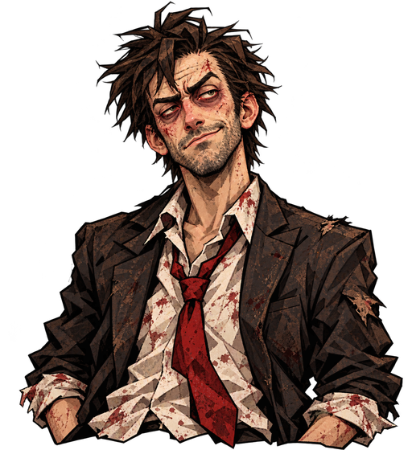
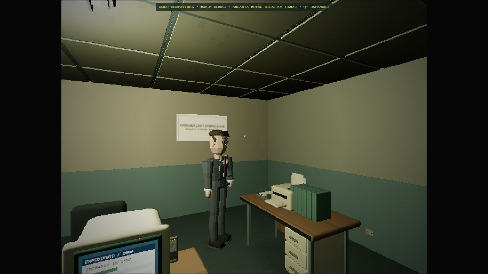
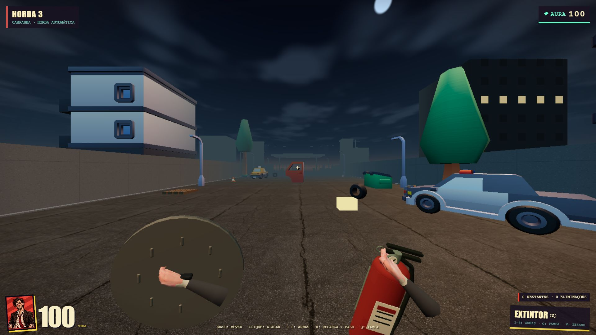
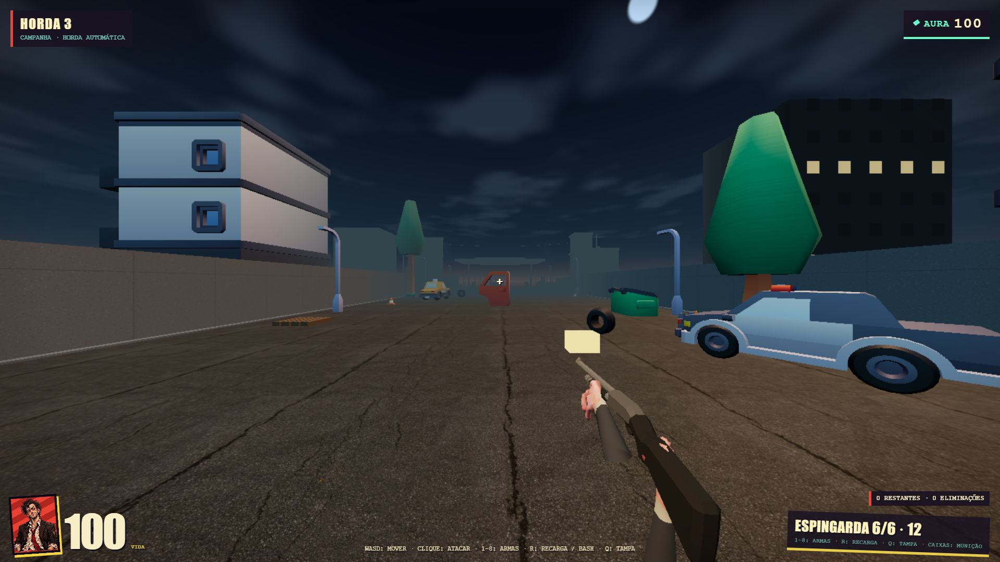
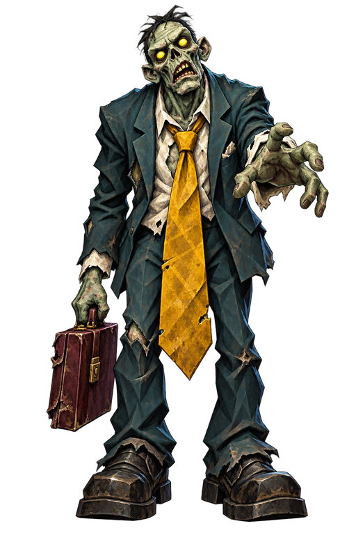
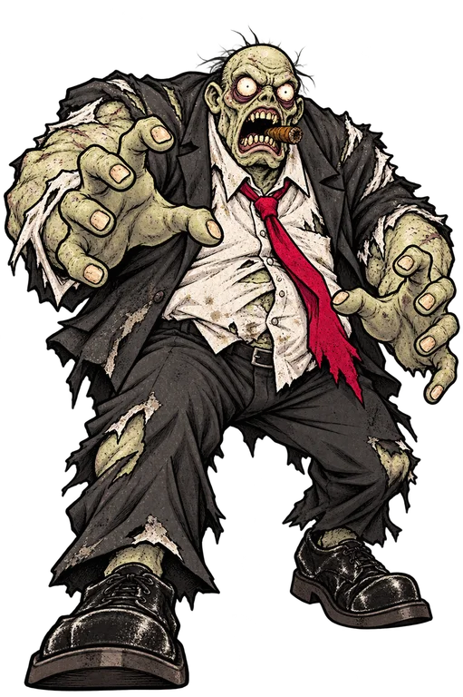
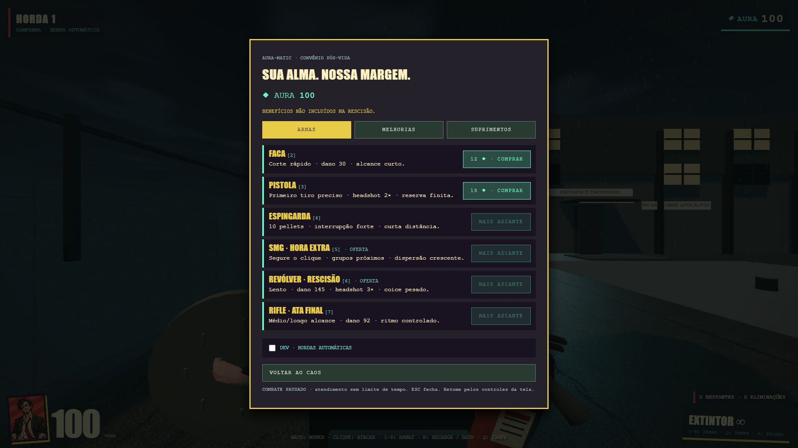
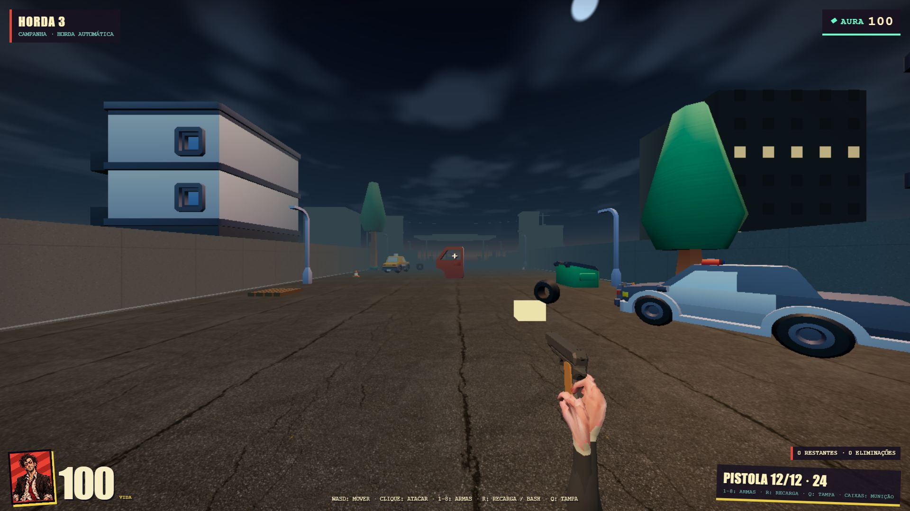
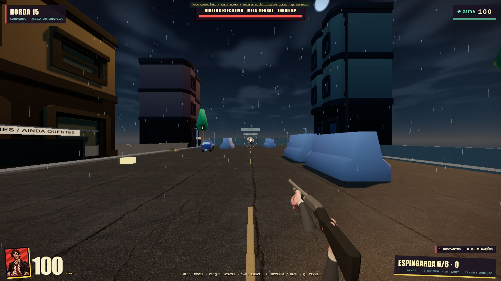

JÁ IMPLEMENTADO
Voltar diferente.
Normal, Hard e Hora Extra.
Eventos, encontros e modificadores.
APRESENTAÇÃO INTERATIVA · GAME JAM
Um expediente ruim.
Um apocalipse pior ainda.

UM JOGO INDIE EM PRIMEIRA PESSOA. NENHUM BENEFÍCIO INCLUÍDO.
02 / O QUE É DISORDER
Um funcionário dispensado precisa sobreviver a colegas que levaram o trabalho para o pós-vida.
Capítulo 1 jogável no navegador.
Combate, economia e novas runs.
03 / PREMISSA
Rotina. Burocracia. Demissão.
Na saída, o mundo muda.
O escritório mantém sua imagem
640 × 480 / 4:3.

O PROBLEMA AGORA ESTÁ DO LADO DE FORA. →

04 / AGORA EM 16:9
Sobreviver é escolher onde gastar seu próximo recurso.
Leia a rua: cobertura, suprimentos e caminhos para o próximo confronto.
IMAGEM REAL DO JOGO · CAPÍTULO COM SEIS ÁREAS E UM CONFRONTO FINAL
05 / ARSENAL
ARMA SELECIONADA
Controle de grupos a curta distância.
10 pellets independentes.
Um disparo pode atingir vários alvos.
Impactos por superfície · munição finita
Gore configurável · feedback visual e sonoro

06 / DOSSIÊS DA EMPRESA
Persegue e pressiona de perto.
Mantenha distância. Use a tampa para abrir espaço.
Recortes 2D transparentes no mundo 3D.
Comportamento legível antes do ataque.

ARQUIVO / 006 — ATIVO
07 / REUNIÃO FINAL
IDENTIDADE RESTRITA
A última aprovação
vem da diretoria.
SETA DIREITA TAMBÉM REVELA
DIRETORIA / AMEAÇA MÁXIMA
“Sua resistência foi registrada.”
Três fases · avisos antes dos ataques · janelas de resposta
Não é apenas uma barra de vida maior.
08 / ECONOMIA DA RUN
1 inimigo comum = 1 Aura garantida.
Orbe físico · coleta automática
Pesados: 2 · elites: 4–5
Double Aura dobra os drops comuns.

SALDO DE EXEMPLO · NÃO ALTERA O JOGO
◆ 100 AURA
Escolha um benefício. A próxima compra ficará mais cara.
Preços-base do modo Normal.
Preço = arredondar para cima(base × 1,28ⁿⁱ́ᵛᵉˡ)
09 / DEPOIS DA RUN
JÁ IMPLEMENTADO
Normal, Hard e Hora Extra.
Eventos, encontros e modificadores.
PROPOSTA / NÃO IMPLEMENTADA
1 eliminação → 1 ponto persistente.
Investir em melhorias permanentes.
31:42 de sobrevivência → 312 pontos propostos
10 / RECURSOS DA EMPRESA
JavaScript · Three.js
HTML · CSS · Vite
Site estático no GitHub Pages.
Sem backend em runtime.
Billboards, texturas compactas e efeitos em pools.
IA a 10 Hz. Qualidade ajustável.
11 / INCIDENTES REGISTRADOS
ESCRITÓRIOAtmosfera, humor e rotina.
VIRADA PARA O FPSArsenal, inimigos e economia.
LEGIBILIDADE E ESTABILIDADEPegada das armas, câmera e feedback.

ENTRADARetomar o controle após cutscenes.
LEITURAMãos, armas e inimigos no mesmo estilo.
ECONOMIAPequenos drops previsíveis; preços crescentes.
PERFORMANCELimitar efeitos, memória e atualizações.
AINDA EM POLIMENTO / PLAYTEST HUMANO
12 / EXPEDIENTE ENCERRADO
O RH não aprovou.
Você pode jogar.
O jogo online precisa de internet. Esta apresentação não.
Capítulo 1 jogável · projeto independente em polimento